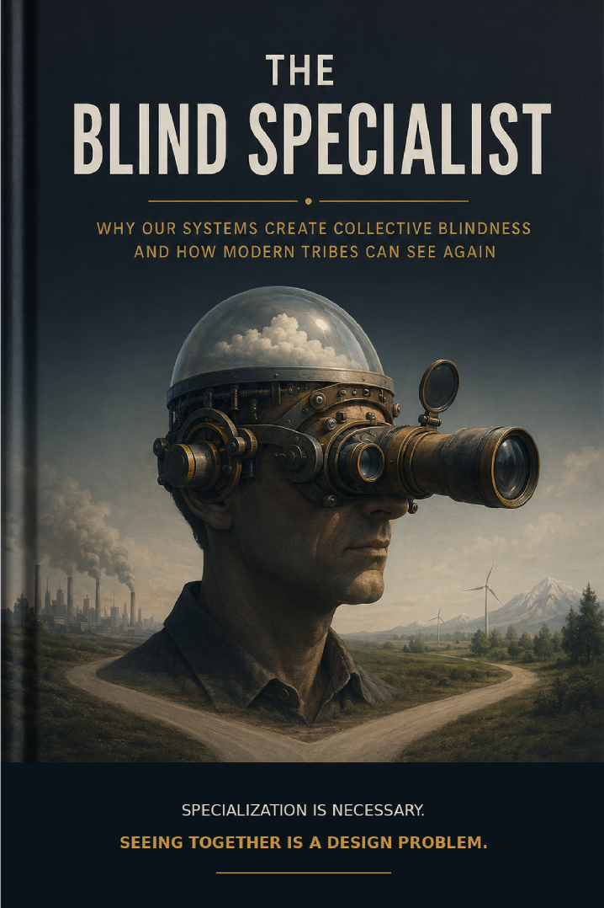

Power, Institutions & Society · Axiologic Research Editions
The Blind Specialist
Why Our Systems Create Collective Blindness and How Modern Tribes Can See Again
Keep the microscope, but investigate the structures that let knowledge remain local while consequences become collective and nobody owns the whole picture.
Keep the microscope
The book is not nostalgic for a mythical generalist who can master everything. Specialized lenses make medicine, engineering, science, and complex coordination possible. The danger begins when each lens becomes an institution with incentives, dashboards, and language that make the seams between lenses invisible.
The result is collective blindness: no person needs to be ignorant or malicious for the organization to lose sight of the outcome it jointly creates.
Awareness debt
Awareness debt accumulates when local decisions postpone the cost of integration. A team optimizes its measure, a department meets its target, a vendor follows the contract—and the unsolved connections become someone else’s future crisis. Fragmentation can be an administrative convenience with political effects.
Competence does not add up to understanding when the system has no place where the pieces can meet.
Modern tribes can see together
Shared models, cross-boundary review, independent challenge, consequence tracking, and authority for integrative work can make systemic awareness a real responsibility rather than an afterthought. The book asks how institutions can preserve expertise while making distributed knowledge answerable to a shared world.